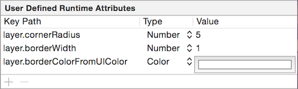

Storyboard中有个运行时属性非常有用，现在我们就用来给某个View增加边框，但是边框属性是Layer层的东西，边框颜色用的是CGColor，而Storyboard只支持UIColor，所以我们需要作个转换。
Objective-C版本的Extension，新建CALayer+Additions类:
@import QuartzCore;
@interface CALayer (Additions)
@end
#import "CALayer+Additions.h"
@import UIKit;
@implementation CALayer (Additions)
- (void)setBorderColorFromUIColor:(UIColor *)color
{
self.borderColor = color.CGColor;
}
@end
Swift版本的Extension，新建CALayer+Additions.swift文件:
import UIKit
extension CALayer {
var borderColorFromUIColor: UIColor {
get {
return UIColor(cgColor: self.borderColor)
}
set {
self.borderColor = newValue.cgColor
}
}
}
弄好之后，在Storyboard中选中需要设置边框的View，选中Identity inspector，在User Defined Runtime Attributes中添加layer.borderColorFromUIColor和layer.borderWidth两个属性，像下面的设置好即可：
